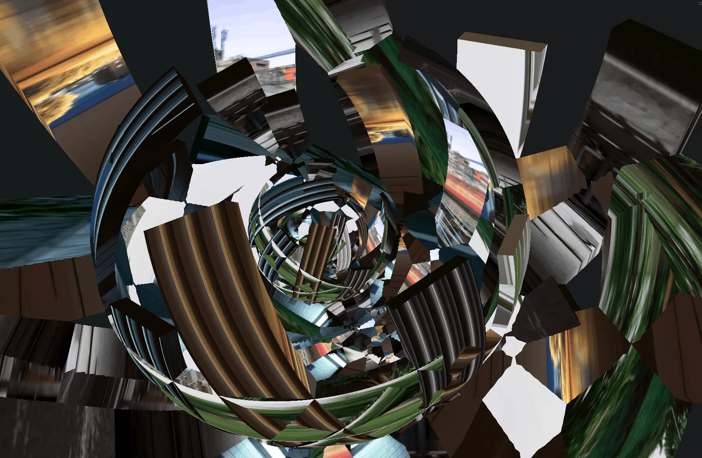
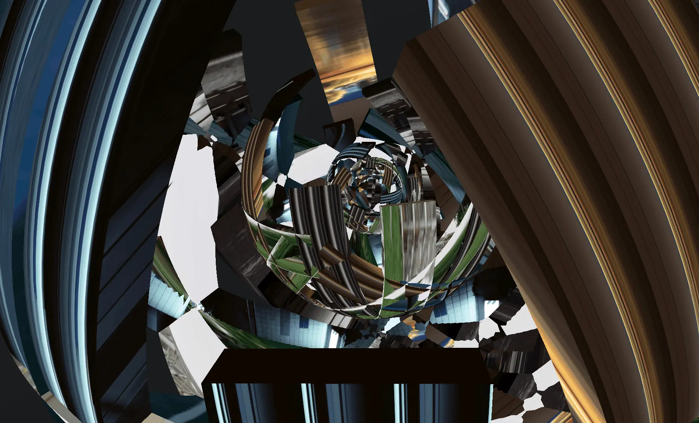
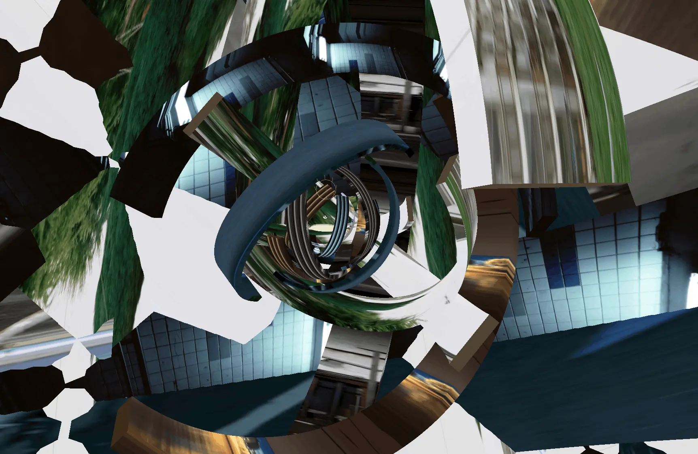
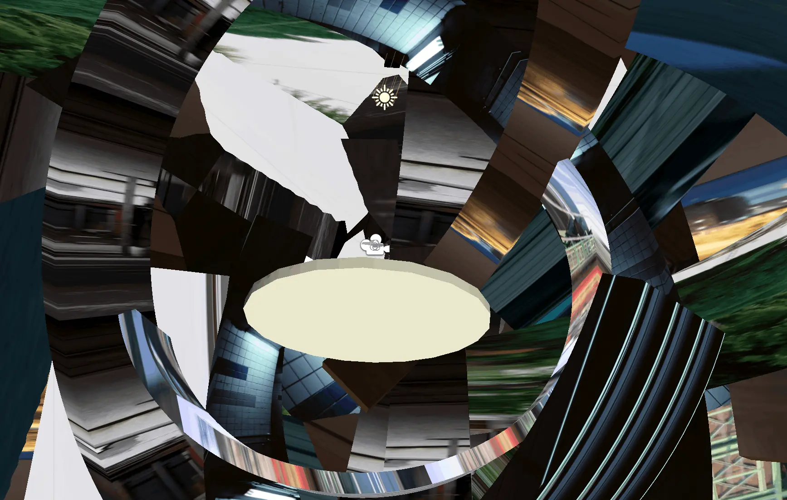
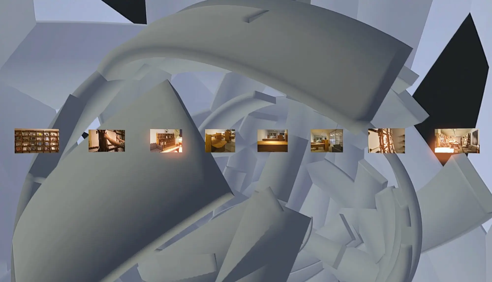
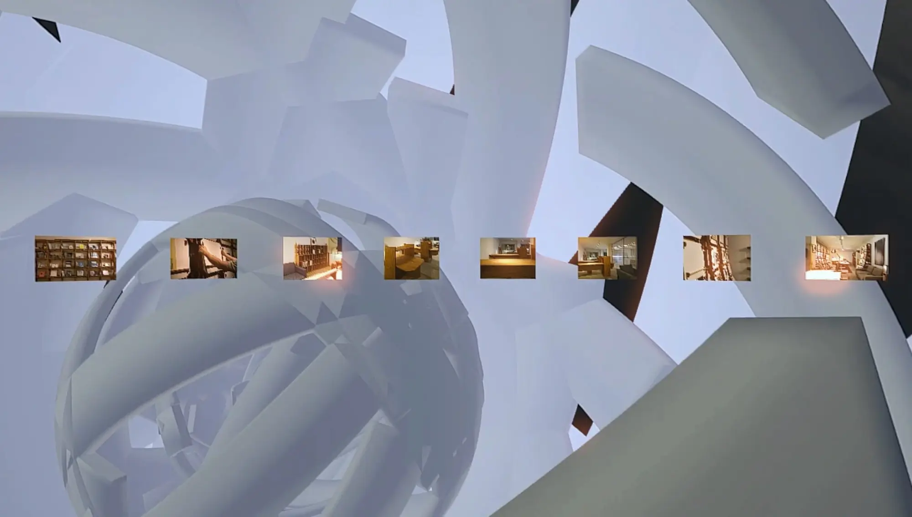
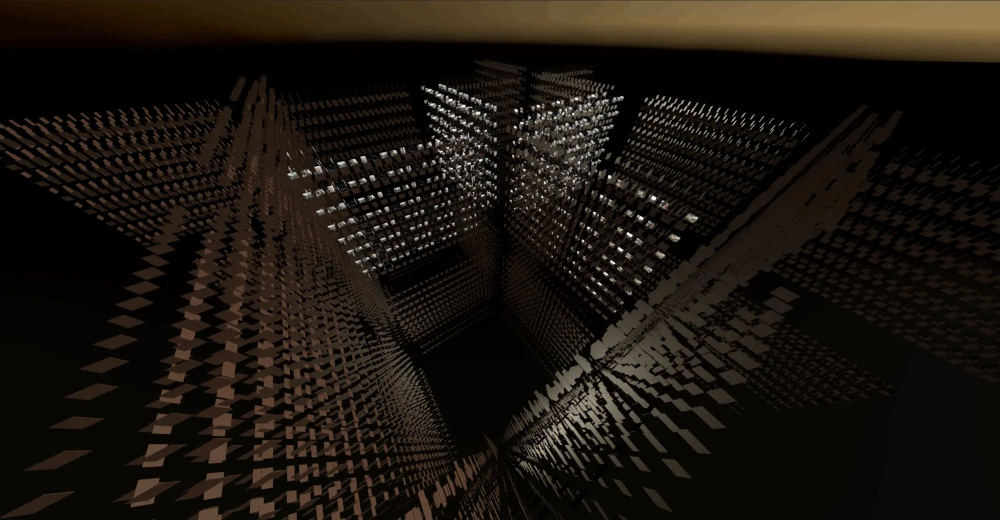
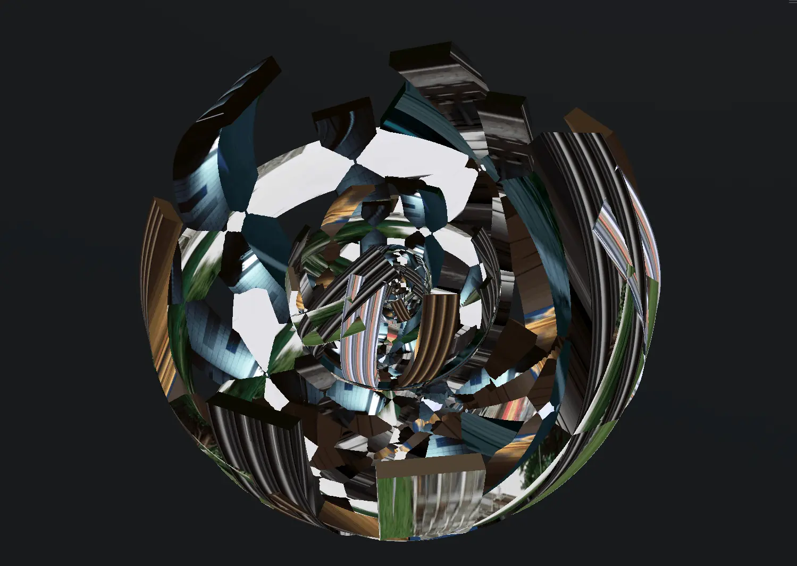
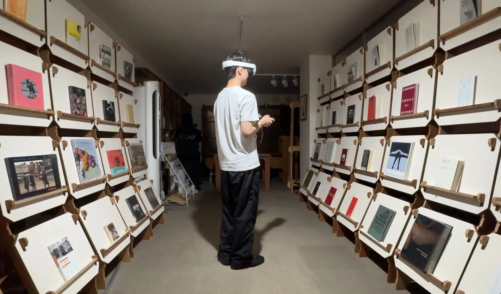
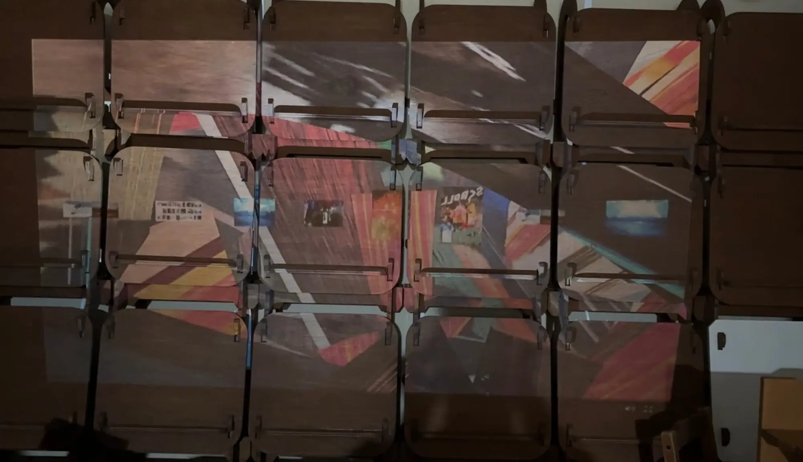

영원한 광경

지난 2025년, 전시 「영원한 광경」을 기획하고 디자인했습니다. 2025년 7월, 8월에 전시했으며, 현재 사진의 도서관에서 사전 예약 신청을 통해 관람할 수 있습니다.
영원한 광경(2025~)
사진의 도서관을 데이터로 이주시켜야 한다. 「영원한 광경」은 실재하는 장소인 사진의 도서관을 VR/AR로 시각화해 데이터의 세계로 이주시키려는 첫번째 시도이다. 분해하고 재조립할 수 있도록 설계된 도서관의 정신을 이어, 이 작업 역시 완결된 결과로 고정하지 않고 계속 조합되고 해체될 수 있는 상태로 남겨둔다. 끝없이 이어지는 광경을 상상하며, 사진의 도서관이 영원히 존속할 방법을 찾는다.
디렉팅, 디자인: 한준석
시각화 개발 및 디자인: 유민서
주최: 노기훈, LBDF
시스템 개발: 정유라








